Introducere
Crearea de formulare pentru baza de date poate face introducerea datelor mai comodă. Când creați un formular, îl puteți proiecta într-un mod care funcționează cu baza de date și care are sens pentru dvs.
În această lecție, veți învăța cum să creați și să modificați formulare. De asemenea, veți învăța cum să utilizați opțiunile de formular, cum ar fi controalele de proiectare și proprietățile formularului, pentru a vă asigura că formularul funcționează exact așa cum doriți.
Pentru a crea un formular:Access facilitează crearea unui formular din orice tabel din baza de date. Orice formular pe care îl creați dintr-un tabel vă va permite să vizualizați datele care sunt deja în acel tabel și să adăugați date noi. După ce ați creat un formular, îl puteți modifica adăugând câmpuri suplimentare și controale de proiectare, cum ar fi casetele combinate.
- În panoul de navigare, selectați tabelul pe care doriți să îl utilizați pentru a crea un formular. Nu trebuie să deschideți masa.
- Selectați fila Creare, localizați grupul Formulare, apoi faceți clic pe comanda Formular.
- Formularul dvs. va fi creat și deschis în vizualizarea Aspect.
- Pentru a salva formularul, faceți clic pe comanda Salvare din bara de instrumente Acces rapid. Când vi se solicită, introduceți un nume pentru formular, apoi faceți clic pe OK.
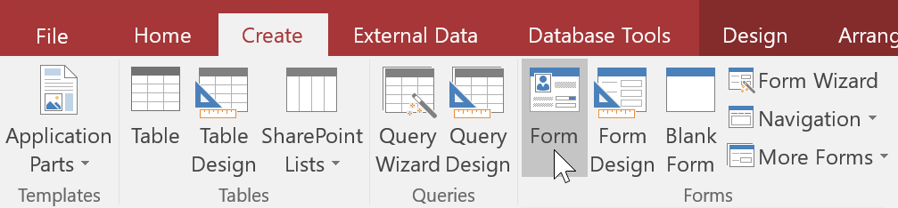
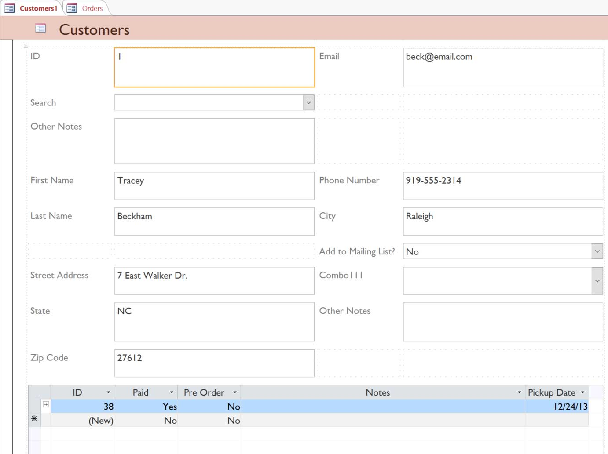
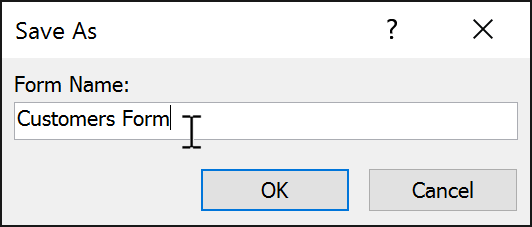
Dacă ați creat un formular dintr-un tabel cu înregistrări care sunt legate de un alt tabel, formularul dvs. include probabil un subformular. Un subformular este un formular de foaie de date care afișează înregistrările legate într-un format asemănător tabelului. De exemplu, subformularul inclus în formularul Clienți pe care tocmai l-am creat afișează comenzile clienților legate.
Probabil că nu trebuie să includem acest subformular, deoarece vrem doar să folosim formularul Clienți pentru a introduce și a revizui informațiile de contact. Dacă descoperiți că nu aveți nevoie de un subformular, îl puteți șterge cu ușurință. Pentru a face acest lucru, faceți clic pe el și apăsați tasta Ștergere de pe tastatură.
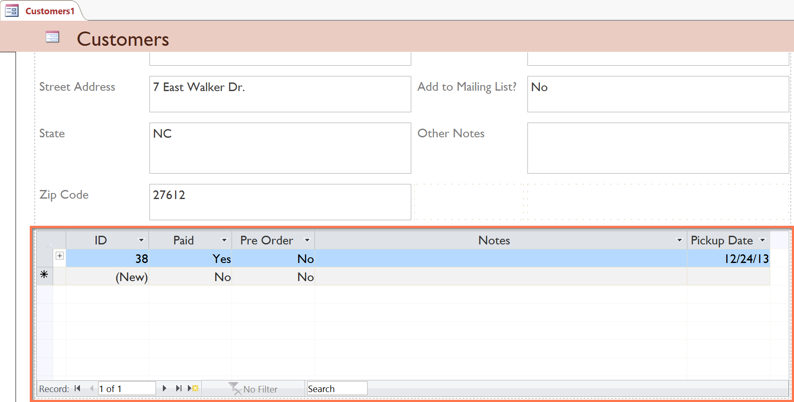
Cu toate acestea, subformularele sunt adesea destul de utile. În funcție de conținutul și sursa formularului, este posibil să descoperiți că subformularul conține informații utile, ca în exemplul de mai jos. În formularul nostru Comenzi, subformularul conține numele, cantitatea și prețul fiecărui articol din comandă, care reprezintă toate informații utile.
Adăugarea de câmpuri suplimentare la un formular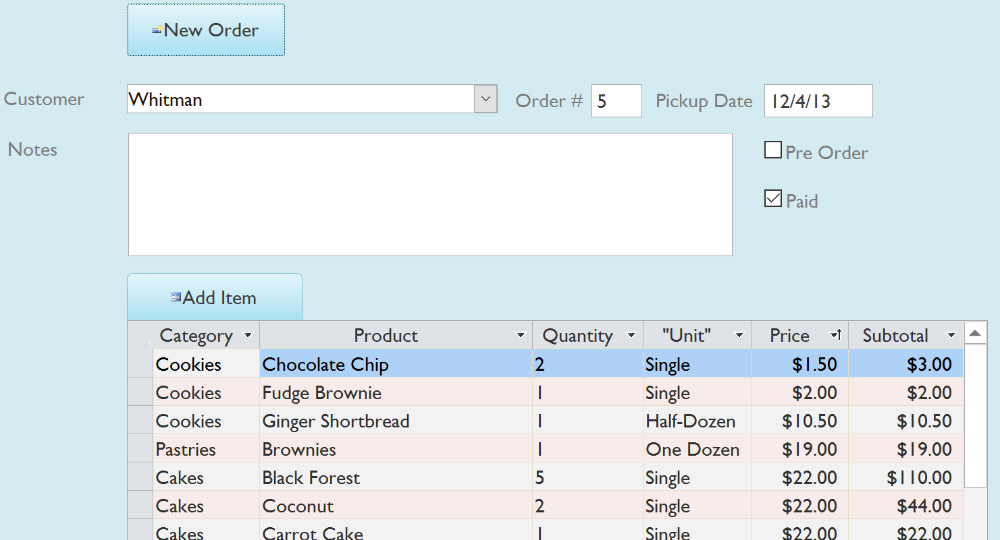
Când utilizați comanda Formular pe un tabel existent, toate câmpurile din tabel sunt incluse în formular. Cu toate acestea, dacă mai târziu adăugați câmpuri suplimentare la tabel, aceste câmpuri nu vor apărea automat în formularele existente. În astfel de situații, puteți adăuga câmpuri suplimentare la un formular.
Pentru a adăuga un câmp la un formular:- Selectați fila Design, apoi localizați grupul Instrumente din partea dreaptă a Panglicii.
- Faceți clic pe comanda Adăugați câmpuri existente.
- Va apărea panoul Listă câmpuri. Faceți dublu clic pe câmpurile dorite.
- Câmpul va fi adăugat.
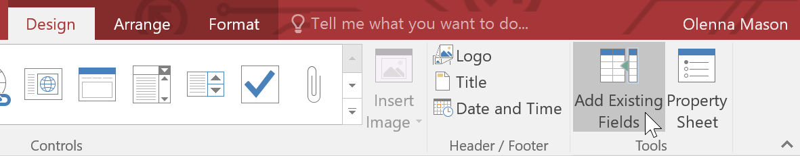
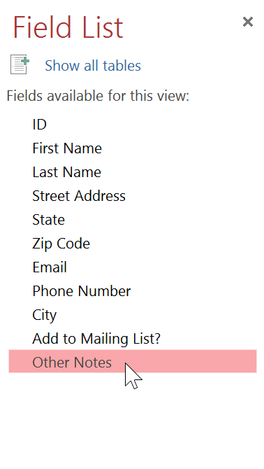
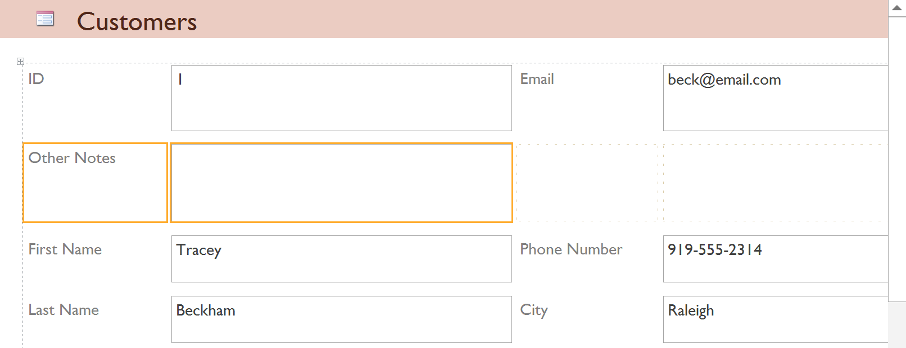
De asemenea, puteți adăuga câmpuri din diferite tabele din baza de date la formular.
- Din panoul Listă câmpuri, faceți clic pe Afișați toate tabelele.
- Faceți clic pe semnul plus + de lângă tabelul care conține câmpul pe care doriți să îl adăugați, apoi faceți dublu clic pe câmpul dorit. Noul câmp va fi adăugat.

Controalele de proiectare stabilesc restricții asupra câmpurilor din formularele dvs. Acest lucru vă ajută să controlați mai bine modul în care datele sunt introduse în formularele dvs., ceea ce, la rândul său, ajută la menținerea consecvenței bazei de date.
Casete combinateO casetă combinată este o listă derulantă pe care o puteți utiliza în formular în locul unui câmp. Casetele combinate limitează informațiile pe care utilizatorii le pot introduce, forțându-i să selecteze numai opțiunile pe care le-ați specificat.
Casetele combinate sunt utile pentru câmpurile care au un număr limitat de răspunsuri valide posibile. De exemplu, puteți utiliza o casetă combinată pentru a vă asigura că oamenii intră numai într-un stat valid din SUA în timp ce introduc o adresă sau că aleg numai produse care există deja în baza dvs. de date atunci când plasează o comandă.
Pentru a crea o casetă combinată:- În vizualizarea Aspect formular, selectați fila Design, apoi localizați grupul Controale.
- Selectați comanda Combo Box, care arată ca o listă derulantă.
- Selectați locația dorită pentru caseta combinată. Va apărea o linie pentru a indica locația în care va fi creată caseta dvs. combo. În exemplul nostru, îl vom plasa între câmpul Oraș și Adăugare la lista de corespondență? câmpuri.
- Va apărea caseta de dialog Combo Box Wizard. Selectați Voi introduce valorile pe care le doresc, apoi faceți clic pe Următorul.
- Introduceți opțiunile care doriți să apară în lista dvs. derulantă. Fiecare alegere ar trebui să fie pe propriul rând. În exemplul nostru, creăm o casetă combinată pentru Adăugare la lista de corespondență? câmpul din formularul nostru, așa că vom introduce toate răspunsurile valide posibile pentru acest câmp. Utilizatorii vor putea selecta una dintre cele trei opțiuni din caseta noastră combinată finalizată: Nu , Da - Săptămânal și Da - Evenimente și oferte speciale.
- Dacă este necesar, redimensionați coloana astfel încât tot textul să fie vizibil. După ce sunteți mulțumit de lista dvs., faceți clic pe Următorul.
- Selectați Stocare acea valoare în acest câmp, apoi faceți clic pe săgeata derulantă și selectați câmpul în care doriți să fie înregistrate selecțiile din caseta dvs. combinată. După ce ați făcut selecția, faceți clic pe Următorul.
- Introduceți eticheta - sau numele - care va apărea lângă caseta dvs. combo. În general, este o idee bună să folosiți numele câmpului pe care l-ați ales la pasul anterior.
- Faceți clic pe Terminare . Caseta dvs. combo va apărea pe formular. Dacă ați creat caseta combo pentru a înlocui un câmp existent, ar trebui să ștergeți primul câmp. În exemplul nostru, ați putea observa că acum avem două câmpuri cu același nume. Aceste două câmpuri trimit informații în același loc, așa că nu avem nevoie de ambele. Îl vom șterge pe cel fără caseta combinată.
- Comutați la vizualizarea Formular pentru a vă testa caseta combinată. Pur și simplu faceți clic pe săgeata derulantă și verificați dacă lista conține opțiunile corecte. Caseta combinată poate fi acum folosită pentru a introduce date.
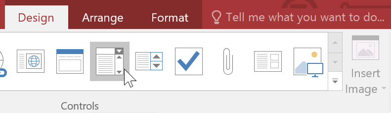
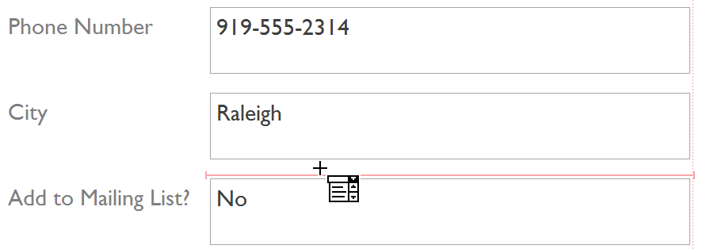
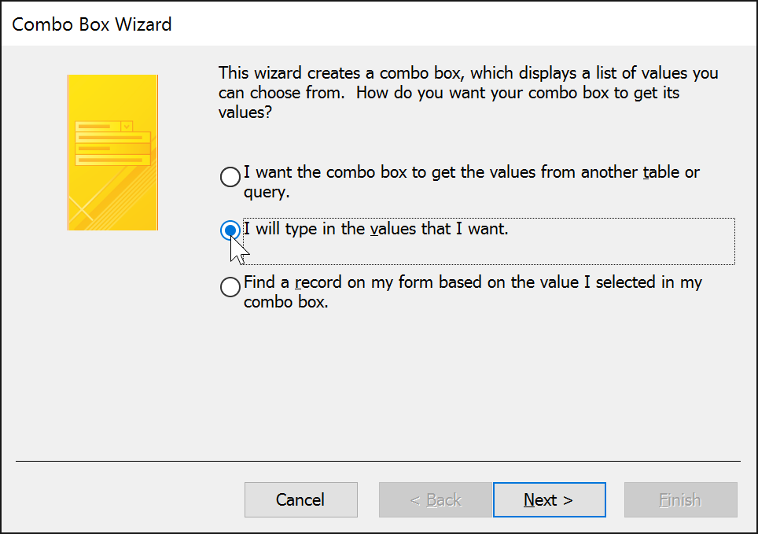
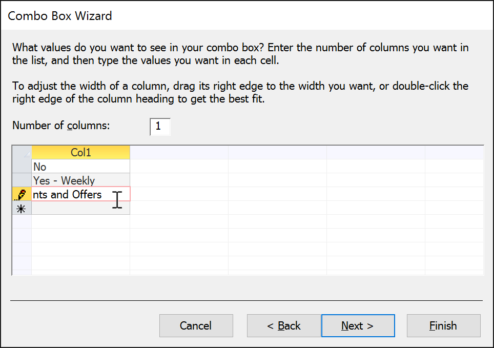
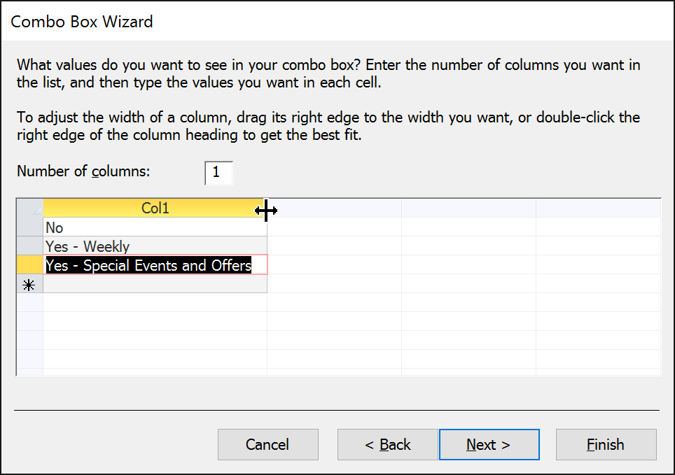
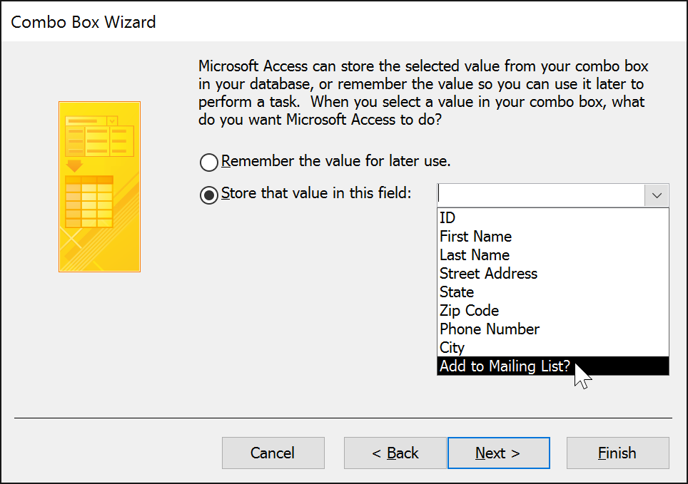
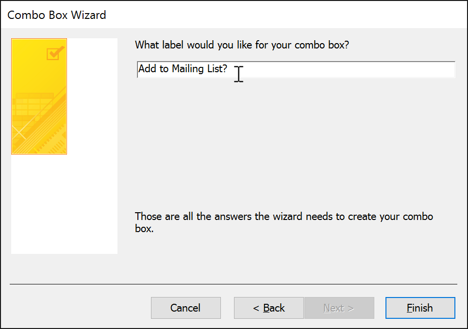
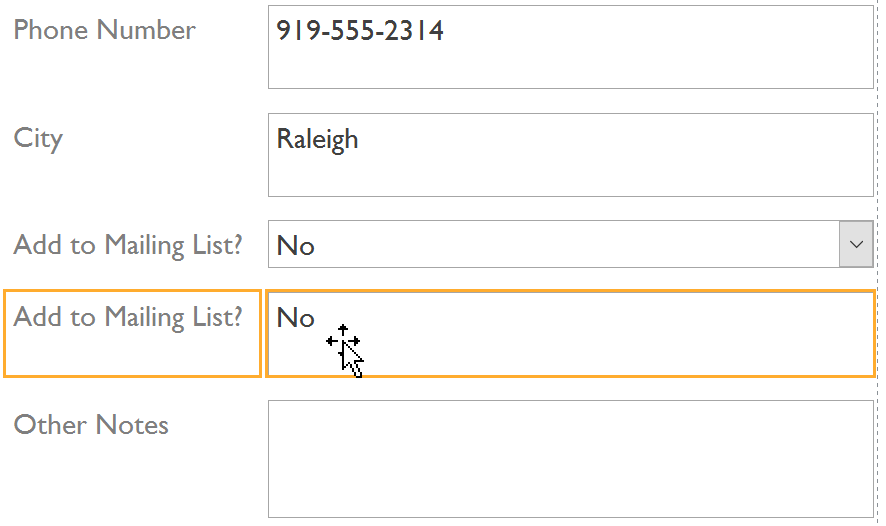
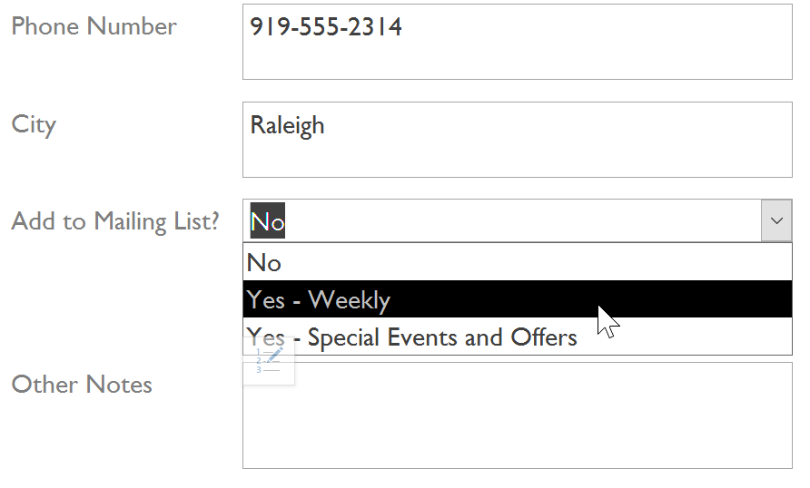
Fișa de proprietate este un panou care conține informații detaliate despre formularul dvs. și despre fiecare dintre componentele acestuia. Din foaia de proprietate, puteți face modificări în fiecare parte a formularului dvs., atât în ceea ce privește funcția, cât și aspectul.
Cel mai bun mod de a vă familiariza cu Fișa de proprietate este să o deschideți și să selectați diferite opțiuni. Când selectați o opțiune, Access va afișa o scurtă descriere a opțiunii pe marginea din stânga jos a ferestrei programului.
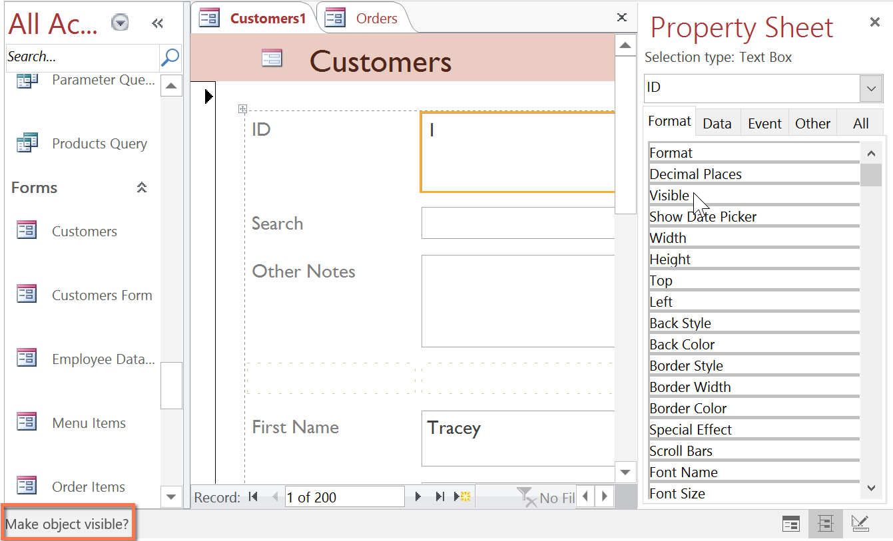
Modificarea setărilor formularuluiExistă mult prea multe opțiuni în Foaia de proprietăți pentru a le discuta pe toate în detaliu. Vom examina două dintre cele utile aici: ascunderea câmpurilor și setarea câmpurilor cu date pentru a completa automat data curentă. Practicarea acestor proceduri ar trebui să vă ofere, de asemenea, o idee despre cum să lucrați cu alte setări ale foii de proprietate.
Pentru a ascunde un câmp:- În vizualizarea Layout sau Design, selectați fila Design, apoi localizați grupul Instrumente. Faceți clic pe comanda Foaie de proprietăți.
- Foaia de proprietăți va apărea într-un panou din dreapta. În formular, selectați câmpul pe care doriți să-l ascundeți. În exemplul nostru, vom ascunde câmpul ID client pentru că nu dorim ca niciunul dintre utilizatorii noștri să încerce să-l editeze.
- În Foaia de proprietate, faceți clic pe fila Toate, apoi localizați opțiunea Vizibil pe al cincilea rând.
- Faceți clic pe săgeata drop-down din coloana din dreapta, apoi selectați Nu.
- Comutați la vizualizarea Formular pentru a verifica dacă câmpul este ascuns.
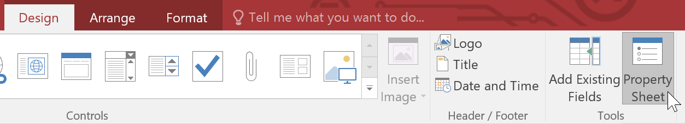
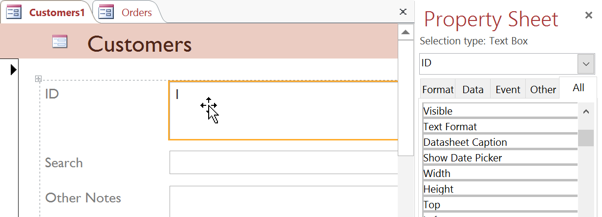
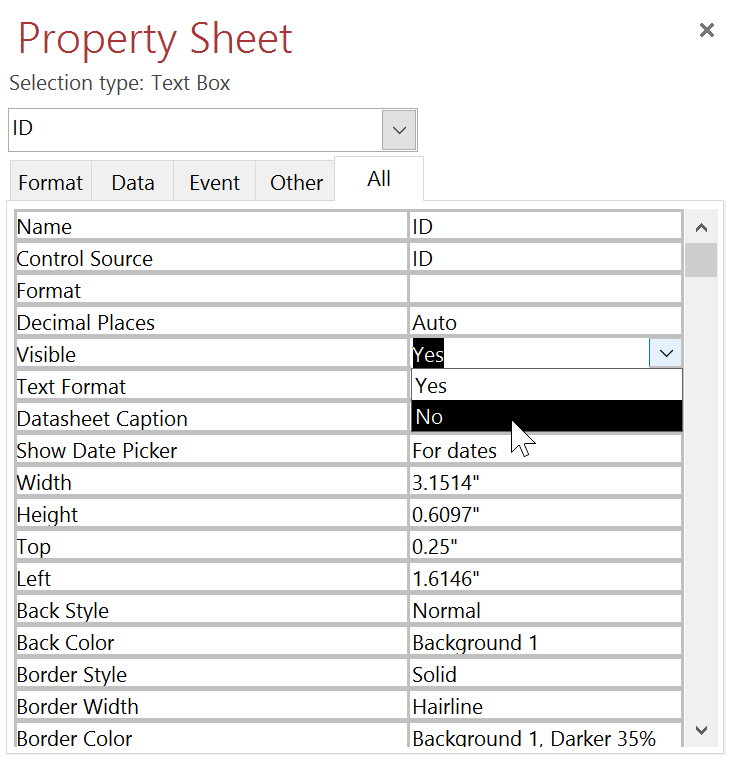
- În vizualizarea Layout sau Design, selectați fila Design, apoi localizați grupul Instrumente. Faceți clic pe comanda Foaie de proprietăți.
- Foaia de proprietăți va apărea într-un panou din dreapta. Pe formular, selectați câmpul pe care doriți să îl completați automat la data curentă. Acesta trebuie să fie un câmp cu tipul de date privind data. Pentru exemplul nostru, vom selecta câmpul Data ridicării din formularul Comenzi.
- În Foaia de proprietate , faceți clic pe fila Date, apoi selectați câmpul Valoare implicită din al patrulea rând. Faceți clic pe butonul Expression Builder care apare în coloana din dreapta.
- Va apărea caseta de dialog Expression Builder. În lista Elemente de expresie, faceți clic pe cuvintele Expresii uzuale.
- În lista Categorii de expresii, faceți dublu clic pe Data curentă.
- Va fi adăugată expresia pentru Data curentă. Faceți clic pe OK.
- Comutați la vizualizarea Formular pentru a verifica dacă expresia funcționează. Când creați o înregistrare nouă cu formularul respectiv, câmpul pentru dată pe care l-ați modificat va completa automat data curentă.
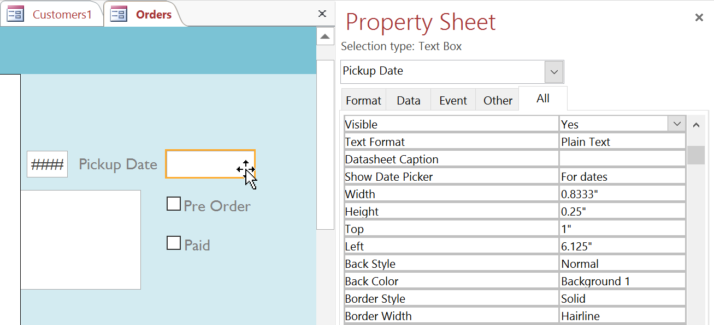
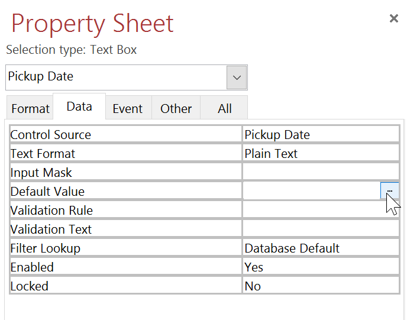
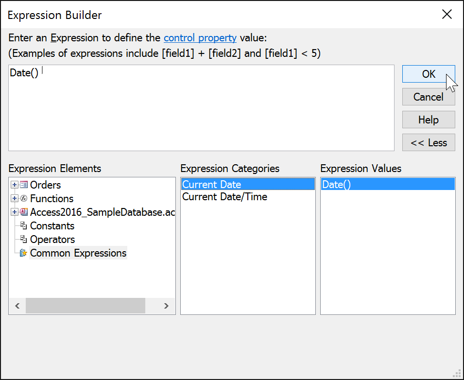
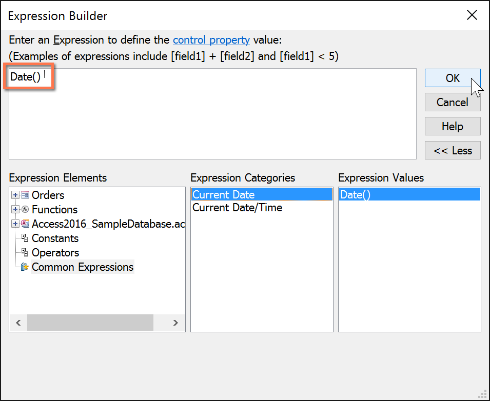
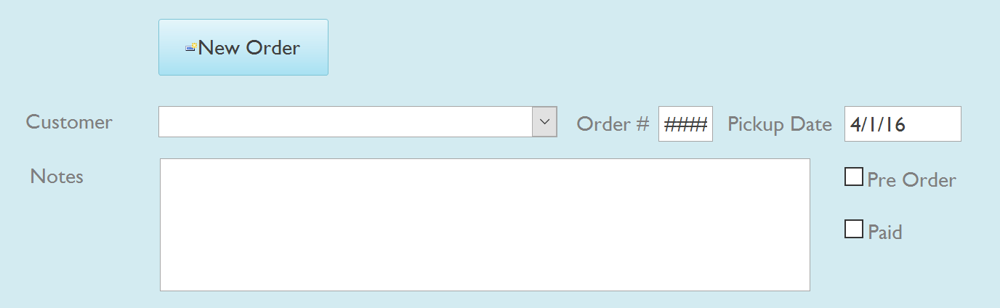